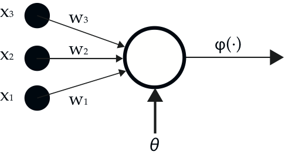
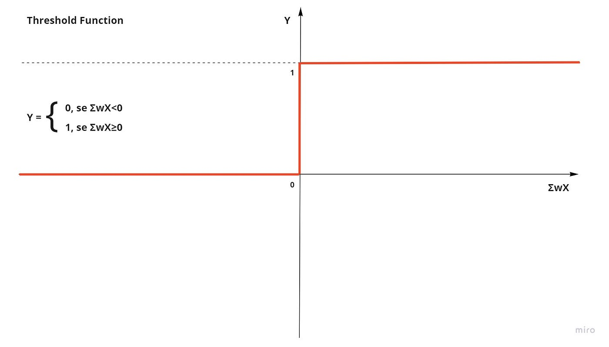

Questa è sicuramente una delle materie più particolari e innovative che abbiamo affrontato, perché tratta argomenti di grande attualità e in continua evoluzione. Non si tratta
ancora di una materia ufficialmente istituzionalizzata, e infatti la nostra scuola è tra le prime in Italia ad averla introdotta all'interno del percorso di informatica. In
questo corso studiamo l'intelligenza artificiale sia da un punto di vista teorico che pratico, utilizzando principalmente il linguaggio Python.
Uno degli argomenti più affascinanti che abbiamo approfondito è la rete neurale artificiale, che costituisce la base di funzionamento dei cosiddetti “bot intelligenti”, un po'
come i neuroni nel cervello umano. Una rete neurale è composta da neuroni artificiali (o perceptron), ognuno dei quali è una sorta di "unità di calcolo" che somma gli input ricevuti,
ognuno pesato con un certo valore, e li elabora attraverso una funzione chiamata funzione di attivazione.


Come si può vedere dalla prima immagine, un neurone è composto da: